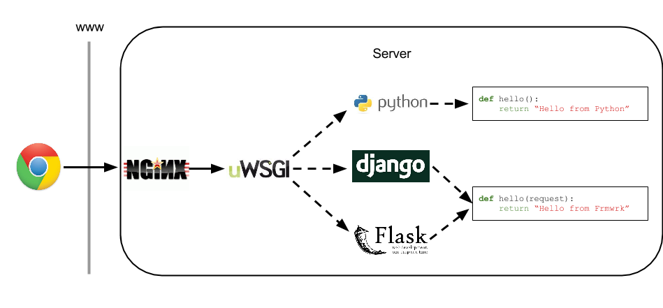
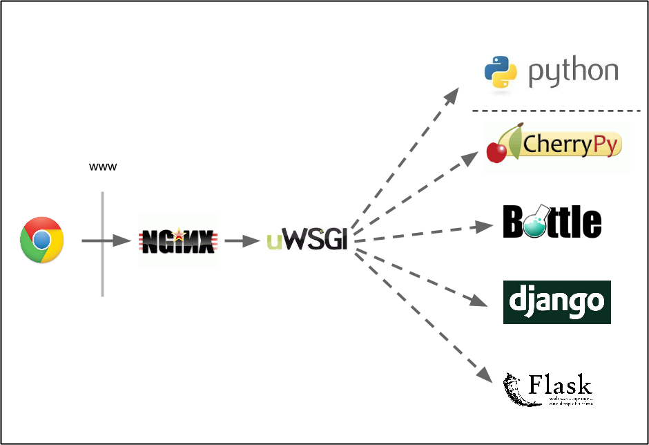
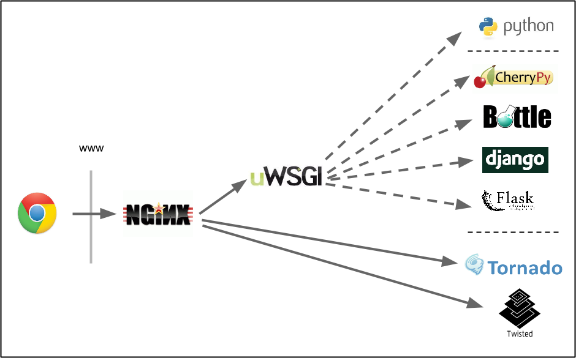
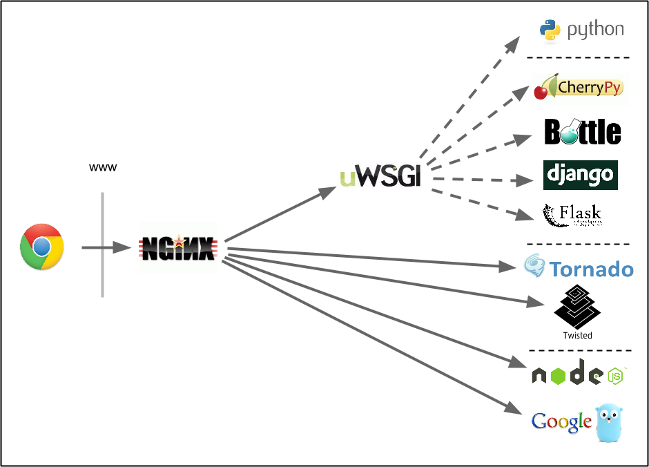
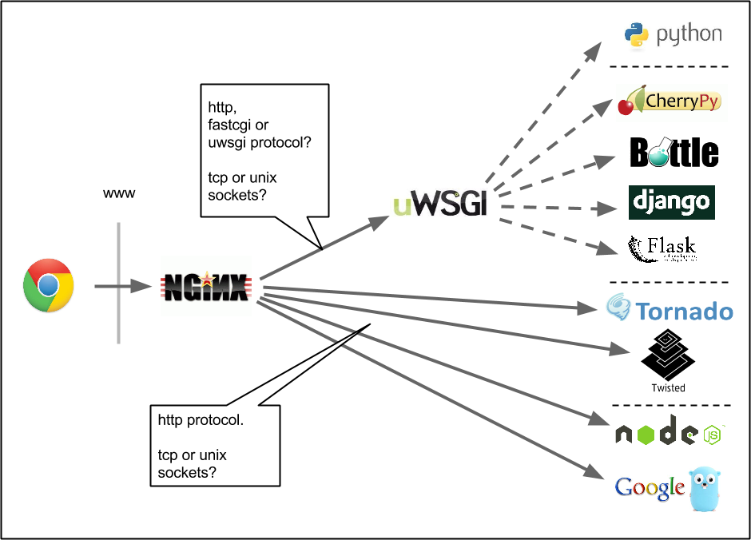
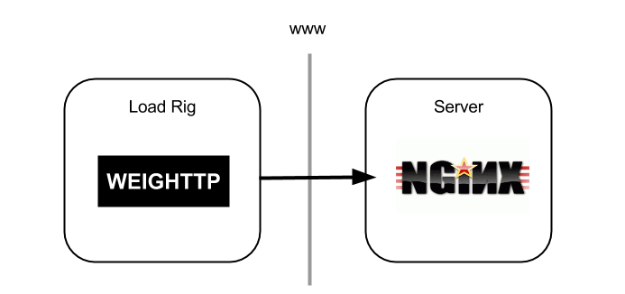
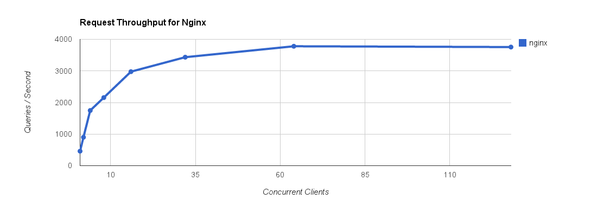

Maximum Throughput
(Baseline costs of web frameworks)
Brian McDonnell, CTO at PageFair.com
Typical Production Stack

Minimum WSGI Implementation

Add a Framework to the Mix
What's the cost before it hits your code?

What computation is occurring?

Anyone with high-frequency, low computation requests
- Analytics (e.g. PageFair)
- Tracking pixels
- Real-time geo-positioning data
Why use a framework?
Why not?
- Framework should support you when you need it
- And get out of the way when you don't
Testing Python Web Frameworks

Testing Python Async 'Frameworks'

Testing Non-python Async 'Frameworks'

Socket Types & Protocols

Measuring Throughput
- Use weighttp to offer load to the server
- Throughput asymptotes at resource exhaustion
- In these tests
- CPU Exhaustion
- No IO limits hit
- Never out of Memory
Set up 2 AWS Small Instances

and watch them fight...
Disable non-essential services
- Disable per-request logging
- Disable any debug modes
- Stop all unrequired services (munin, cron jobs)
Lots of requests, sockets, file handles
- Increase file handles
- Increase listen backlogs
- Increase somaxconn & tcp_max_syn_backlog
File Handles
/etc/security/limits.conf
* hard nofile 131072
* soft nofile 65536
In terminal for current session
$ ulimit -Hn 131072
$ ulimit -Sn 65536
Socket Backlog
/etc/sysctl.conf
net.core.somaxconn = 8191
net.ipv4.tcp_max_syn_backlog = 8191
In terminal for current session
sudo sysctl -w net.core.somaxconn=8191
sudo sysctl -w net.ipv4.tcp_max_syn_backlog=8191
Verify changes
$ cat /proc/sys/fs/file-max
$ ulimit -Hn
$ ulimit -Sn
$ cat /proc/sys/net/ipv4/tcp_max_syn_backlog
$ cat /proc/sys/net/core/somaxconn
First Test

- Weighttp runs a number of 'clients'
- Each client requests a URL from target server
- Clients wait for a response before issuing next request
Weighttp Vs Nginx
| Weighttp | Nginx |
|---|
| Language | C | C |
|---|
| Concurrency Model | Single-threaded, evented | Single-threaded, evented |
|---|
| Supports | Reduced HTTP | Full HTTP |
|---|
Using Weighttp
$ weighttp -c 1 -n 1000 http://server.pycon.ie/hello
- Increase concurrent clients
- Monitor CPU saturation
- Monitor thoughput asymptoting
$ weighttp -c 2 -n 1000 http://server.pycon.ie/hello
...
$ weighttp -c 4 -n 2000 http://server.pycon.ie/hello
...
$ weighttp -c 8 -n 4000 http://server.pycon.ie/hello
... etc...
Nginx Config
worker_processes 1;
events {
worker_connections 8191;
}
server {
listen 80 backlog=8191;
server_name server.pycon.ie;
location /hello {
return 200 'Hello from nginx';
}
}
Live Demo
(If we can we SSH to AWS...)
Watch out for 'steel' on AWS
CPU taken away from a virtual machine to serve other purposes
Results: Weighttp---|--->Nginx
| |
Concurrent Clients |
| |
1 | 2 | 4 | 8 |
16 | 32 | 64 | 128 |
| Nginx | q/s |
459 | 899 | 1747 | 2155 |
2976 | 3434 | 3780 | 3755 |
Results: Weighttp---|--->Nginx

User vs System
How did Nginx saturate the CPU?
| IO | Computation |
|---|
| | User | System |
|---|
| TCP Cxn Open | syn-ack, ack | | accept |
| Read request | recv data | | read |
| Parse request | - | string parsing | |
| Match request(nginx.conf) | - | rule matching | |
| Write response | send data | | send |
| TCP Cxn close | fin, fin-ack | | close |
Test 2: Nginx-->uwsgi-python
- http vs fastcgi vs uwsgi protocols
- tcp vs unix sockets

uWSGI Listen Backlog
app-specific xml config
0.0.0.0:20000
1
1
8191
Results: Weighttp-->Nginx-->Uwsgi
Guess?
| Socket | Protocol | AppServer | App | q/s |
| Nginx | | | | | 3780 |
| Nginx | tcp | http | uWSGI | py skel | ? |
| Nginx | tcp | fastcgi | uWSGI | py skel | ? |
| Nginx | tcp | uwsgi | uWSGI | py skel | ? |
Results: Weighttp-->Nginx-->Uwsgi
| Socket | Protocol | AppServer | App | q/s |
| Nginx | | | | | 3780 |
| Nginx | tcp | http | uWSGI | py skel | 1247 |
| Nginx | tcp | fastcgi | uWSGI | py skel | 1177 |
| Nginx | tcp | uwsgi | uWSGI | py skel | 1319 |
Results: Weighttp-->Nginx-->Uwsgi
| Socket | Protocol | AppServer | App | q/s |
| Nginx | | | | | 3780 |
| Nginx | tcp | http | uWSGI | py skel | 1247 |
| Nginx | tcp | fastcgi | uWSGI | py skel | 1177 |
| Nginx | tcp | uwsgi | uWSGI | py skel | 1319 |
| Nginx | unix | uwsgi | uWSGI | py skel | 1495 |
Test Python Web Frameworks
Results: Weighttp-->Nginx-->Uwsgi
| Socket | Protocol | AppServer | App | q/s |
| Nginx | | | | | 3780 |
| Nginx | unix | uwsgi | uWSGI | py skel | 1495 |
| Nginx | unix | uwsgi | uWSGI | Django | 321 |
| Nginx | unix | uwsgi | uWSGI | Django* | 816 |
| Nginx | unix | uwsgi | uWSGI | Flask | 708 |
| Nginx | unix | uwsgi | uWSGI | Bottle | 1338 |
| Nginx | unix | uwsgi | uWSGI | CherryPy | 417 |
Django* has all default middleware removed.
Test Python Async Frameworks
Results: Weighttp-->Nginx-->Uwsgi
| Socket | Protocol | AppServer | App | q/s |
| Nginx | | | | | 3780 |
| Nginx | unix | uwsgi | uWSGI | py skel | 1495 |
| Nginx | unix | uwsgi | uWSGI | Bottle | 1338 |
| Nginx | unix | uwsgi | uWSGI | Django* | 816 |
| Nginx | unix | uwsgi | uWSGI | Flask | 708 |
| Nginx | unix | uwsgi | uWSGI | CherryPy | 417 |
| Nginx | unix | uwsgi | uWSGI | Django | 321 |
| |
| Nginx | unix | uwsgi | uWSGI | Twisted | 530 |
| Nginx | unix | uwsgi | uWSGI | Tornado | 645 |
Django* has all default middleware removed.
Test Non-python Async Frameworks
Results: Weighttp-->Nginx-->Uwsgi
| Socket | Protocol | AppServer | App | q/s |
| Nginx | | | | | 3780 |
| Nginx | unix | uwsgi | uWSGI | py skel | 1495 |
| Nginx | unix | uwsgi | uWSGI | Bottle | 1338 |
| Nginx | unix | uwsgi | uWSGI | Django* | 816 |
| Nginx | unix | uwsgi | uWSGI | Flask | 708 |
| Nginx | unix | uwsgi | uWSGI | Tornado | 645 |
| Nginx | unix | uwsgi | uWSGI | Twisted | 530 |
| Nginx | unix | uwsgi | uWSGI | CherryPy | 417 |
| Nginx | unix | uwsgi | uWSGI | Django | 321 |
| |
| Nginx | unix | uwsgi | uWSGI | Nodejs | 721 |
| Nginx | unix | uwsgi | uWSGI | golang | 1305 |
Django* has all default middleware removed.
Lastly: all results in desc order
Results: Weighttp-->Nginx-->Uwsgi
| Socket | Protocol | AppServer | App | q/s |
| Nginx | | | | | 3780 |
| Nginx | unix | uwsgi | uWSGI | py skel app | 1495 |
| Nginx | unix | uwsgi | uWSGI | Bottle | 1338 |
| Nginx | unix | uwsgi | uWSGI | Golang | 1305 |
| Nginx | unix | uwsgi | uWSGI | Django* | 816 |
| Nginx | unix | uwsgi | uWSGI | Nodejs | 721 |
| Nginx | unix | uwsgi | uWSGI | Flask | 708 |
| Nginx | unix | uwsgi | uWSGI | Tornado | 645 |
| Nginx | unix | uwsgi | uWSGI | Twisted | 530 |
| Nginx | unix | uwsgi | uWSGI | CherryPy | 417 |
| Nginx | unix | uwsgi | uWSGI | Django | 321 |
Django* has all default middleware removed.
Throughput Vs Performance
- Assuming CPU-bound
- ↓computational-cost == ↑throughput
- ↓io-time =/= ↑throughput
- Time-per-request can be poor, while throughput is great
Doing work in your code...
- Django-min, /hello, 64 clients => 816 q/s
- Django-min, /render_name (simple template render), 64 clients => 689 q/s
- Django-min, /render_table (render 6x4 html table), 64 clients => 223 q/s
- Django-min, /lookup (50,000 lookups into a 1,000 item set), 64 clients => 71 q/s
Themes
Reveal.js comes with a few themes built in:
Sky -
Beige -
Simple -
Serif -
Night -
Default
* Theme demos are loaded after the presentation which leads to flicker. In production you should load your theme in the <head> using a <link>.